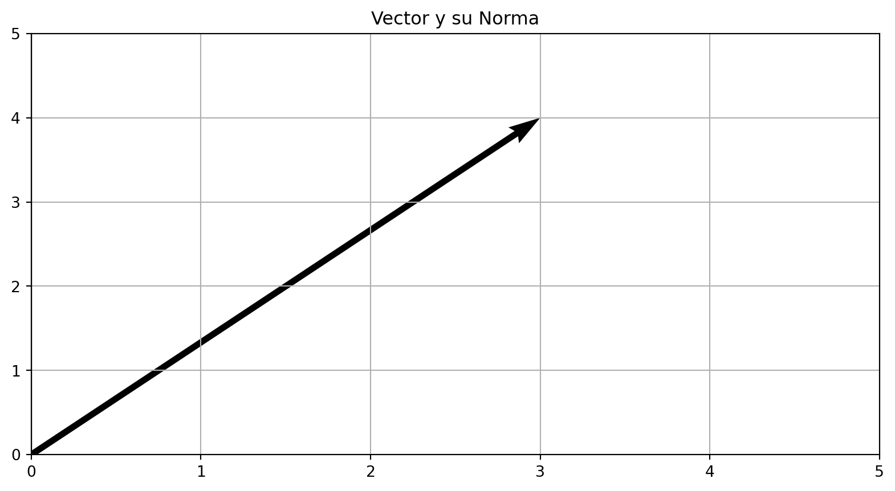
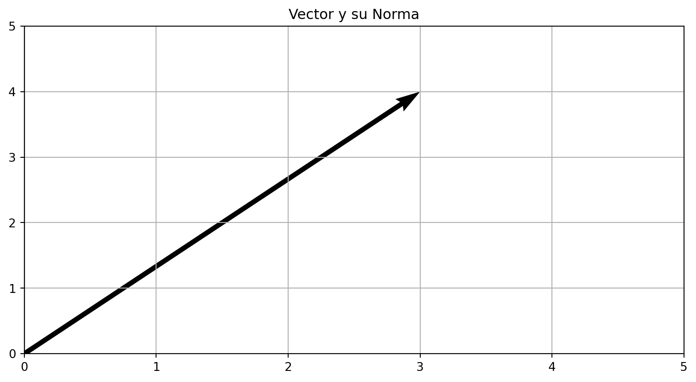
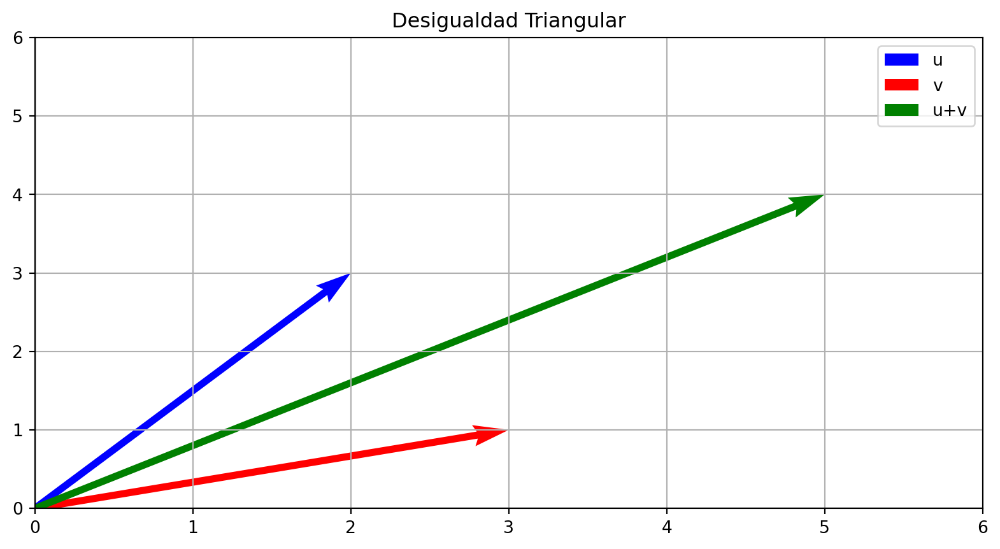
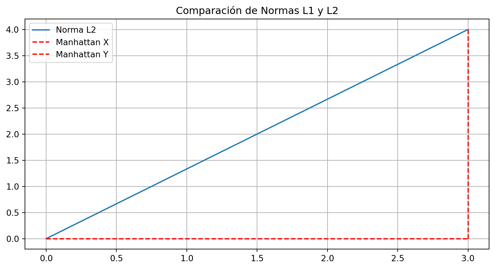
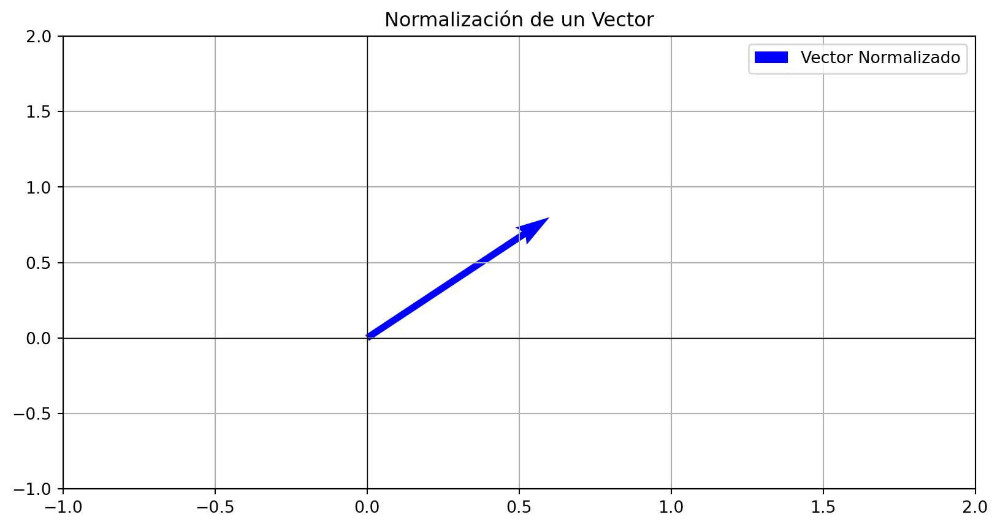
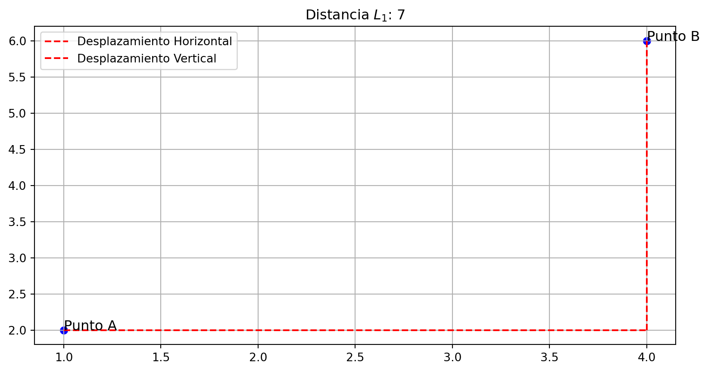
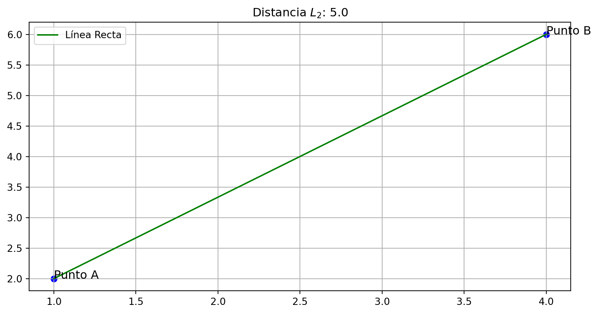
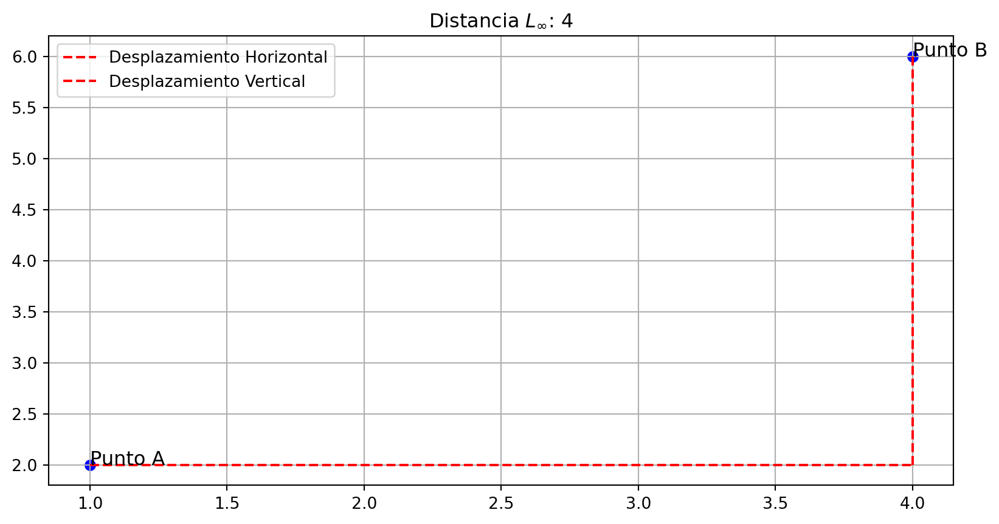
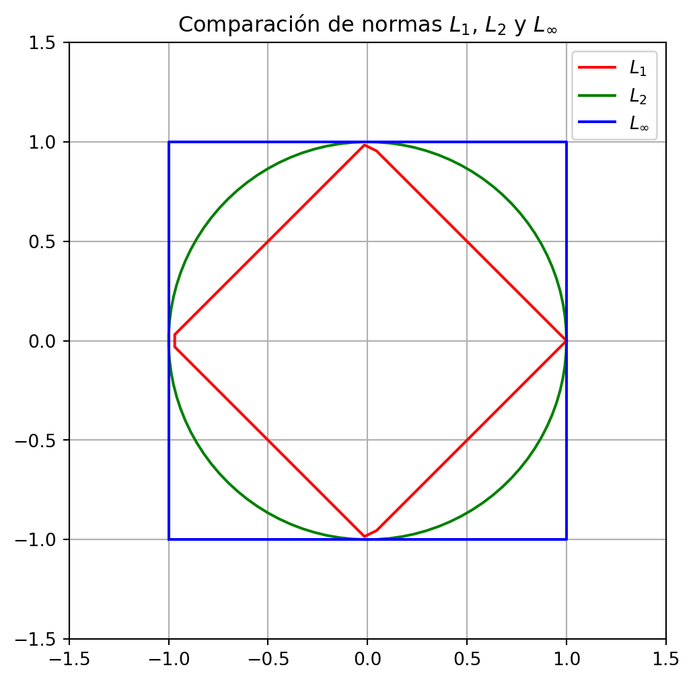

\(\mathbb{R}^n\)
Invalid Date
Definir qué es una norma en álgebra lineal.
Explicar su importancia en la teoría de vectores.
Mostrar las propiedades principales de las normas.
Aplicar normas en ejemplos gráficos.
Dado un espacio vectorial \(\mathbb{R}^n\) con un producto interno $ , \(,\)\(\langle \mathbf{v}, \mathbf{w} \rangle = \sum_{i=1}^n v_i w_i\)$
tomando \(\mathbf{v} = \mathbf{w}\) la norma inducida por el producto interno es:
\[||\mathbf{v}|| = \sqrt{\langle \mathbf{v}, \mathbf{v} \rangle} = \sqrt{\sum_{i=1}^n v_i^2}\]
La norma permite cuantificar el tamaño de un vector.
Es esencial en la normalización de vectores (vectores unitarios).
Se usa en diversas aplicaciones, desde análisis de datos hasta mecánica clásica.

Propiedad 1: No negatividad
\[ ||\mathbf{v}|| \geq 0 \quad \text{y} \quad ||\mathbf{v}|| = 0 \, \text{si y sólo si} \, \mathbf{v} = 0 \]
Propiedad 2: Homogeneidad
\[ ||c \mathbf{v}|| = |c| \cdot ||\mathbf{v}|| \]
Propiedad 3: Desigualdad triangular
\[ ||\mathbf{u} + \mathbf{v}|| \leq ||\mathbf{u}|| + ||\mathbf{v}|| \]

Norma Euclidiana ( L_2 ):
\[ ||\mathbf{v}||_2 = \sqrt{\sum_{i=1}^n v_i^2} \]
Norma ( L_1 ) (Manhattan):
\[ ||\mathbf{v}||_1 = \sum_{i=1}^n |v_i| \]

\[ ||\mathbf{v}||_\infty = \max_i |v_i| \]
Aplicaciones comunes:
Normalización de vectores para algoritmos de aprendizaje automático.
Cálculo de distancias entre puntos en análisis de datos.
Aplicaciones en física, como la mecánica y la óptica.

Contexto: Un repartidor debe viajar entre dos puntos de una ciudad que sigue una disposición en cuadrícula. La ciudad solo permite moverse en dirección horizontal o vertical.
Dado un vector de desplazamiento \(\mathbf{d} = (3, 7)\), calcula la norma \(L_1\) y proporciona una interpretación en términos de distancia recorrida.
\[ ||\mathbf{d}||_1 = |3| + |7| = 3 + 7 = 10 \]
Interpretación: La norma \(L_1\) en este contexto es la distancia total recorrida por el repartidor, sumando los movimientos horizontales y verticales. Representa la “distancia de taxi” o la distancia efectiva en una ciudad con una cuadrícula.
Contexto: En un sistema físico, la norma Euclidiana se utiliza para calcular la magnitud de la velocidad de un objeto que se mueve en el espacio tridimensional.
Dado el vector de velocidad \(\mathbf{v} = (2, 3, 6)\), calcula la norma \(L_2\) y proporciona una interpretación en términos de la magnitud de la velocidad.
\[ ||\mathbf{v}||_2 = \sqrt{2^2 + 3^2 + 6^2} = \sqrt{4 + 9 + 36} = \sqrt{49} = 7 \]
Interpretación: La norma \(L_2\) en este contexto te dará la magnitud de la velocidad, lo que indica la rapidez con la que el objeto se está moviendo en el espacio. Esta magnitud es la velocidad total en metros por segundo.
Contexto: En control de calidad, la norma \(L_\infty\) se utiliza para detectar la desviación máxima de un conjunto de datos.
Dado el vector de errores de medición \(\mathbf{e} = (-0.1, 0.05, -0.2, 0.15)\), calcula la norma \(L_\infty\) y proporciona una interpretación en términos de la desviación máxima.
\[ ||\mathbf{e}||_\infty = \max \{|-0.1|, |0.05|, |-0.2|, |0.15|\} \] \[ = \max \{0.1, 0.05, 0.2, 0.15\} = 0.2 \]
Interpretación: La norma \(L_\infty\) te da la desviación más grande en valor absoluto, lo que indica cuál es el mayor error de medición en el conjunto de datos. Este valor es importante para evaluar el peor caso en términos de precisión.
La distancia \(L_1\) entre dos puntos \(\mathbf{x} = (x_1, x_2)\) y \(\mathbf{y} = (y_1, y_2)\) es:
\[ d_{L_1}(\mathbf{x}, \mathbf{y}) = |x_1 - y_1| + |x_2 - y_2| \]
Esta distancia sigue caminos horizontales y verticales, como en una cuadrícula.

La distancia \(L_2\) entre dos puntos \(\mathbf{x} = (x_1, x_2)\) y \(\mathbf{y} = (y_1, y_2)\) es:
\[ d_{L_2}(\mathbf{x}, \mathbf{y}) = \sqrt{(x_1 - y_1)^2 + (x_2 - y_2)^2} \]
Esta distancia representa la línea recta más corta entre los dos puntos.

La distancia \(L_\infty\) entre dos puntos \(\mathbf{x} = (x_1, x_2)\) y \(\mathbf{y} = (y_1, y_2)\) es:
\[ d_{L_\infty}(\mathbf{x}, \mathbf{y}) = \max(|x_1 - y_1|, |x_2 - y_2|) \]
Esta distancia se enfoca en el mayor desplazamiento en cualquier coordenada.

Podemos comparar las tres distancias calculadas entre los puntos \(A\) y \(B\):
Cada norma mide la distancia de una forma diferente. La distancia \(L_1\) suma las diferencias en las coordenadas, la distancia \(L_2\) mide la línea recta más corta, y la distancia \(L_\infty\) se enfoca en el mayor desplazamiento.
Definicio de circunferencia Una circunferencia es el lugar geométrico de los puntos del plano cuya distancia a otro punto fijo, llamado centro, es constante.
